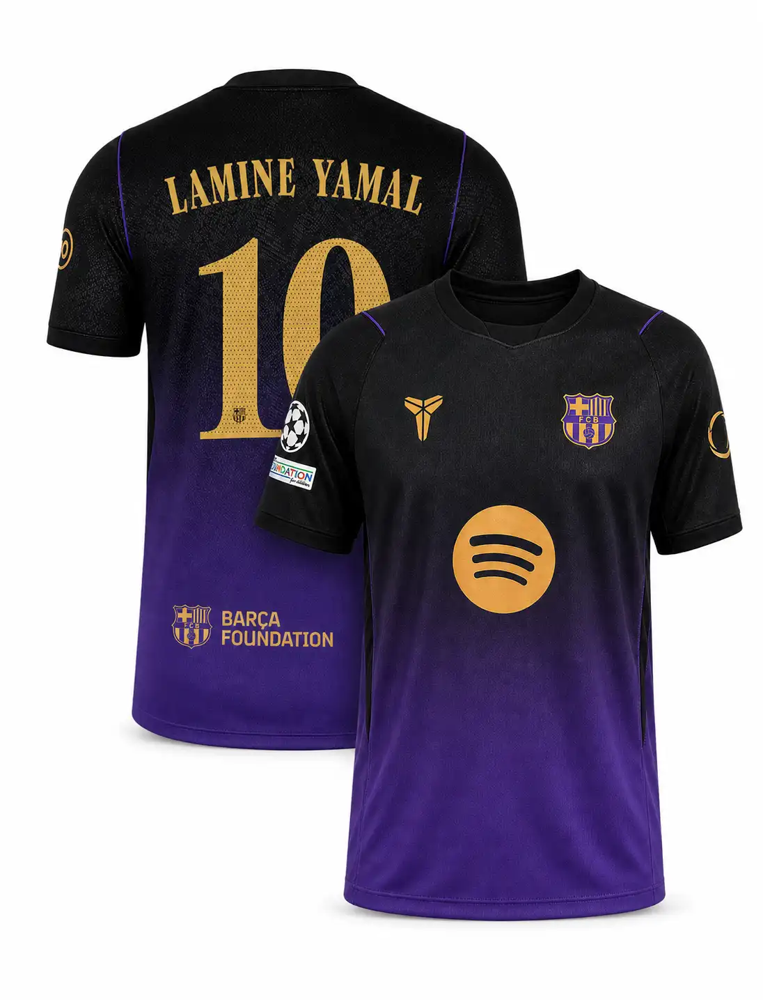
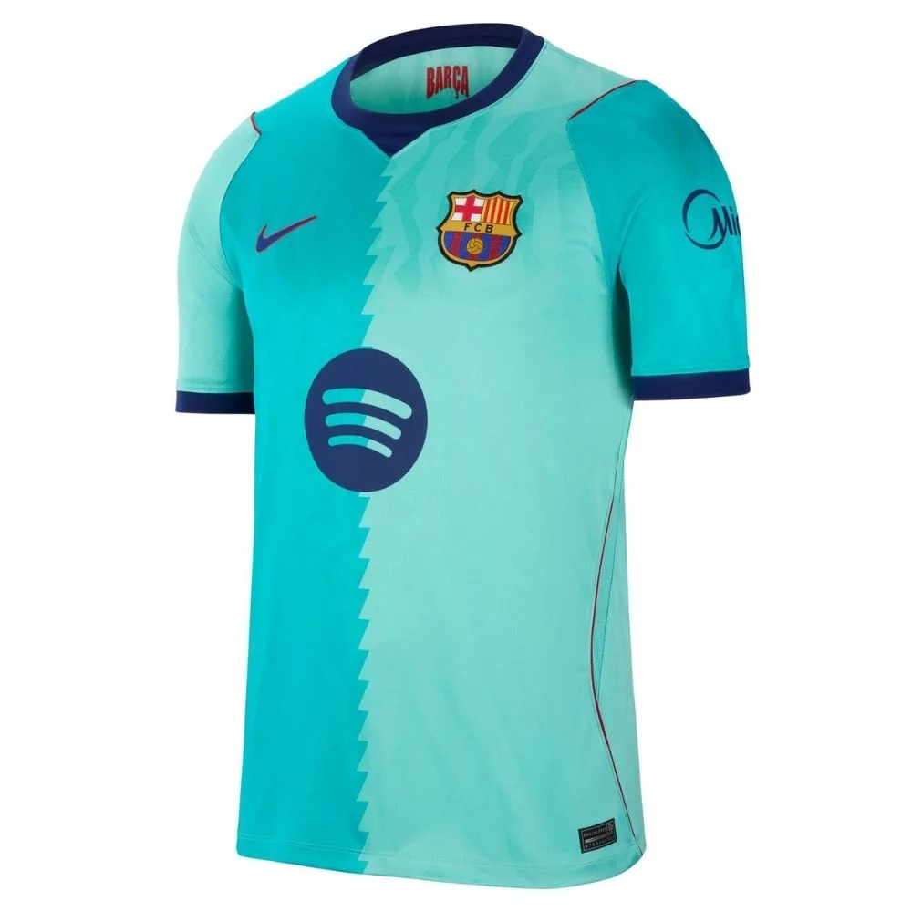

Visual Stories
Photo Gallery
Celebrating the beauty of FC Barcelona through imagery — the stadium, the legends, the trophies, and the moments that make football magical.
Camp Nou
The sacred cathedral of Catalan football, home to breathtaking triumphs and world-class spectacles since 1957.

Camp Nou Exterior
Match Day Atmosphere

Camp Nou Concert
Legendary Moments
Immortal icons whose masterclasses and charisma permanently redefined the sporting universe.

Johan Cruyff — 1973–1978

Ronaldinho 2003–2008

Lionel Messi 2004–2021

Xavi & Iniesta
Glory & Silverware
A legacy forged in gold and silver through relentless pursuit of footballing perfection.

UEFA Champions League Finals

La Liga Champions

Copa del Rey
The Iconic Jerseys
From classic vertical stripes to vibrant away colors, each jersey carries the spirit of its era.

Classic Garnet & Blue Stripes

Away Kit — Yellow

Third Kit — Navy
El Clásico
Passion, intensity, and world-stopping drama whenever the two giants collide.
El Clásico — Barça vs Real Madrid
Camp Nou on El Clásico Night
Explore The Trophies
Discover all 27 La Liga titles, 5 Champions League crowns, 31 Copas del Rey, and more.